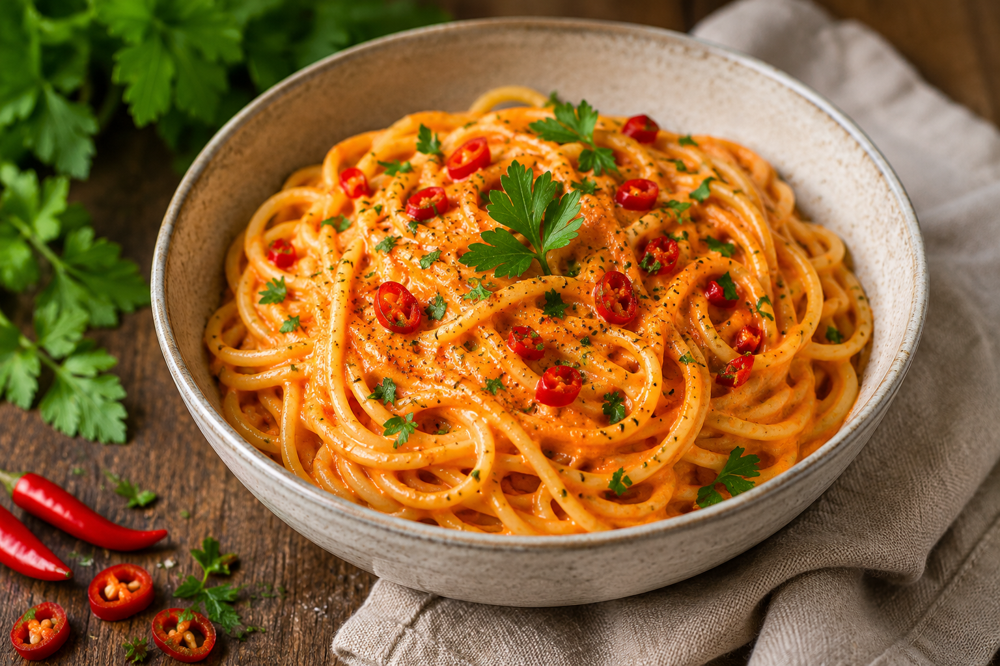

Nudeln mit Paprikasoße
Arbeitszeit: ca. 25 Minuten
Beschreibung
Diese cremigen Nudeln mit Paprikasoße verbinden frisches Gemüse mit einer würzigen und gleichzeitig milden Soße. Durch die Kombination aus Paprika, Gewürzen und einer cremigen Konsistenz entsteht ein einfaches Gericht, das schnell zubereitet werden kann und sich ideal für eine ausgewogene Mahlzeit im Alltag eignet.
Zutaten
Angabe für 2 Personen
- 250 g Spaghetti
- 2 Rote Paprika
- 1 Knoblauchzehe
- 1 kleine Zwiebel
- 1 rote Chilischote
- 1/2 Bio-Zitrone
- 80 ml Sahne
- 1/2 TL Paprikapulver
- 30 g Parmesan
- Salz und Pfeffer
- 1 Prise Zucker
- Olivenöl
- optional: frische Petersilie zum Servieren
Zubereitung
- Den Ofen auf 200° C Umluft vorheizen.
- Zwiebel und Knoblauch schälen und fein würfeln. Die Chilischote entkernen und fein hacken.
- Die Paprika entkernen und in breite Streifen schneiden, in eine feuerfeste Form geben und einen guten Schuss Olivenöl sowie eine Prise Salz dazugeben.
- In der Zwischenzeit etwas Olivenöl in einer Pfanne erhitzen. Darin Zwiebel, Knoblauch und Chili ca. 3 Minuten andünsten. Den Abrieb einer halben Zitrone dazugeben, unterrühren und eine weitere Minute mitandünsten.
- Parallel die Spaghetti nach Packungsanweisung kochen.
- Die geröstete Paprika und die Mischung aus der Pfanne in einen Mixer füllen und grob pürieren. Alternativ einen Pürierstab benutzen.
- Die Paprika-Creme zurück in die Pfanne geben und auf kleiner bis mittlerer Hitze erwärmen. Die Sahne sowie das Paprikapulver dazugeben, unterrühren und erwärmen. Dann den Herd ausstellen, den Käse in die Soße reiben und darin schmelzen. Mit Salz, Pfeffer und Zucker abschmecken./li>
- Fertig gekochte Pasta abgießen und dann in die Pfanne zur Paprika-Soße geben. Alles gut vermengen und mit Parmesan sowie optional fein gehackter, frischer Petersilie servieren.
Weitere Anmerkungen
- Die Schärfe kann durch die Menge der Chili individuell angepasst werden.
- Die Paprikasoße lässt sich auch mit Vollkornnudeln kobinieren.
- Frische Petersilie sorgt für ein besonders aromatisches Erlebnis.